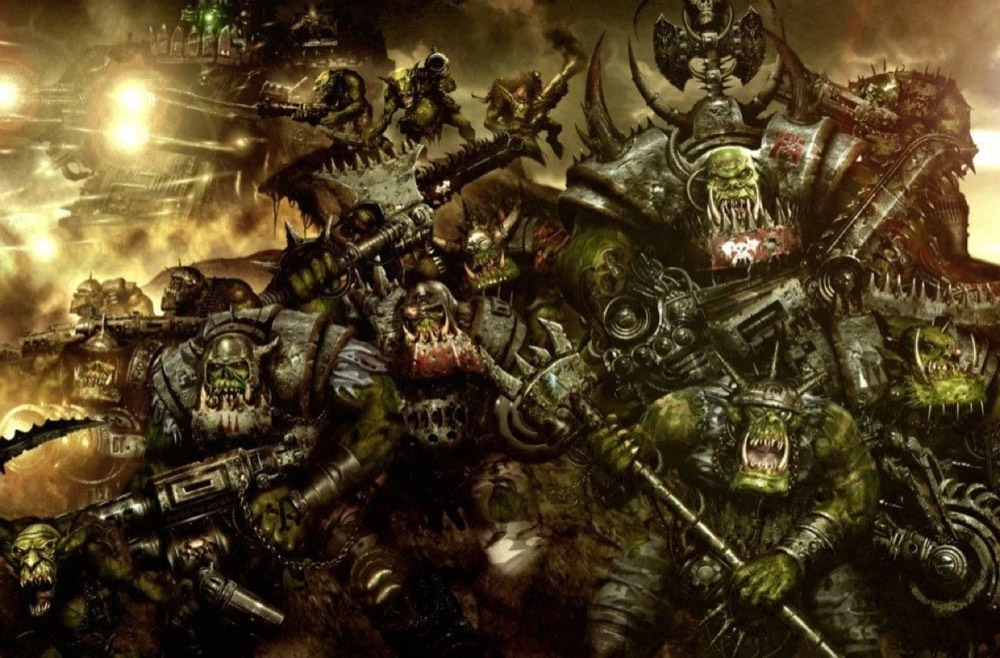
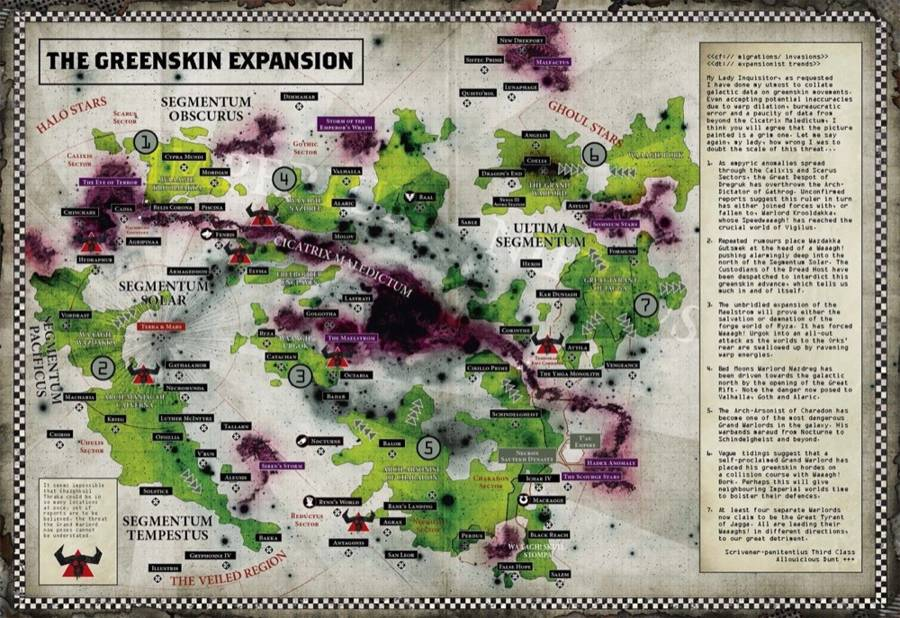

Waaagh!
| Waaagh! | |
|---|---|
 An Ork Waaagh! on the march, from an Ordo Xenos threat survey Artwork © Games Workshop | |
| Type | Ork migration and crusade; gestalt psychic field of the Orks |
| Leader | A Warboss or Warlord, sometimes a self-proclaimed prophet |
| Scale | From a single world to several segmenta |
| Gods invoked | Gork and Mork |
| Earliest Imperial record | The Unification Wars and the Great Crusade, M30 |
| Greatest recorded | Ullanor (c. 999.M30 – 000.M31); the War of the Beast (544–546.M32); the Great Waaagh! of Ghazghkull Thraka (999.M41 – present) |
| Imperial doctrine | Destroy while small; exploit Ork infighting |
A Waaagh! (also written WAAAGH!) is a great crusade of the Orks: a mass movement of Ork tribes, gathered behind a single powerful warlord, that sweeps across the stars in search of war. The word is also the Orks' battle cry, and the name Imperial scholars give to the psychic field that Orks generate together, which grows stronger the more Orks gather and the more they fight. A Waaagh! begins small, grows by conquest and by drawing in other Orks, and ends only when its leader dies or its momentum is broken.[1][2]
Waaaghs are among the most destructive events in the galaxy. The largest have threatened whole segmenta: the Ork empire of Ullanor at the end of the Great Crusade, the War of the Beast of 544–546.M32, and in the present age the Great Waaagh! of Ghazghkull Thraka, which has advanced against the Imperium since the opening of the Great Rift in 999.M41. The Departmento Munitorum advises that a Waaagh! must be destroyed while small, because a large one cannot be stopped.[1][3]
Nature
[edit]The psychic field
[edit]Individual Orks are not psykers, apart from the rare Weirdboyz. Together, however, they generate a field of psychic energy that the Inquisition has studied for millennia. This field, the Waaagh! in its proper sense, strengthens Orks in battle, lets their crude machines work when they should not, and seems to turn what Orks collectively believe into fact. It grows as more Orks gather, and Weirdboyz who absorb too much of it may discharge it in bolts of green power, or have their heads explode.[1]
Beginning
[edit]A Waaagh! begins when a Warboss of unusual size, cunning or charisma conquers the tribes around him. As he wins, more Orks are drawn to him, and the psychic field around his followers grows. Some Warbosses claim visions from the Ork gods Gork and Mork and proclaim themselves prophets. Once the Orks of a world have joined him, the Warboss leads them into space in captured, looted or crudely built ships, and other Ork tribes are drawn to the noise of the fighting.[1]
Growth and end
[edit]A Waaagh! feeds on battle. Victory attracts more Orks, and each conquered world becomes a source of new Orks, because Ork spores remain in the ground of every world where Orks have lived and fought. A Waaagh! that is not checked may grow until it covers whole sectors. It ends when its warlord is killed, when it suffers defeats severe enough to break its momentum, or when its Orks fall to fighting among themselves. Even then, the spores left behind ensure that new Orks will rise on the worlds it passed through.[1][2]

History
[edit]Ullanor
[edit]The greatest Ork empire known to the Great Crusade was that of the Overlord Urlakk Urg, centred on Ullanor. The Emperor of Mankind and nine Legions destroyed it in the Ullanor Crusade, c. 999.M30 – 000.M31, and at the Triumph of Ullanor in 000.M31 the Emperor named Horus Warmaster.[4]
The War of the Beast
[edit]In 544.M32 a Warlord known only as the Beast led a Waaagh! of unprecedented power and technology against the Imperium, which was then still recovering from the Horus Heresy. The war lasted until 546.M32, when the Beast was killed on Ullanor. It changed the Imperium, and led among other things to the founding of the Deathwatch.[5]
The 41st millennium
[edit]The records of the 41st millennium list thousands of Waaaghs. Among the best known are Waaagh! Grax, which attacked the forge world of Ryza in 925.M41; Waaagh! Garaghak, which overran the Forsarr Sector in 952.M41; and Waaagh! Snagrod, which destroyed the fortress-monastery of the Crimson Fists on Rynn's World in 989.M41. The Wars for Armageddon were fought against Waaaghs led by Ghazghkull Thraka in 941–943.M41 and again from 998.M41.[1][6]
The Great Waaagh!
[edit]When the Great Rift opened in 999.M41, Ghazghkull, who calls it "Gork's Grin", declared that the Great Waaagh! had begun. He had already gathered the Ork empire of Octarius into his following, and he led a fleet that Imperial estimates put at more than five million vessels into the Imperium. At Krongar in the early Era Indomitus he was beheaded by the Space Wolves Wolf Lord Ragnar Blackmane, but his head was grafted onto a new body and he returned to lead the Waaagh!. It is now regarded by the Ordo Xenos as the greatest Ork threat since the Beast.[3][1]
Lesser Waaaghs have also exploited the chaos of the Rift. A Speedwaaagh!, a Waaagh! of fast vehicles, crashed onto Vigilus at the start of the War of Nightmares in the first years of the 42nd millennium.[7]

Imperial response
[edit]The Imperium has no policy towards the Orks other than war. Munitorum doctrine holds that a Waaagh! must be struck before it grows, preferably by killing its warlord, and that the Orks' own feuds should be exploited. Large Waaaghs are fought with crusades of their own, and worlds where Orks have been driven out are often kept under permanent watch because the spores in the soil will produce new Orks. The Inquisitor Fidus Kryptman went further in 997.M41, diverting part of Hive Fleet Leviathan into Octarius so that the Tyranids and the Orks would destroy one another.[2][1]
Timeline
[edit]| Date | Waaagh! | Outcome |
|---|---|---|
| c. 999.M30 – 000.M31 | Urlakk Urg of Ullanor | Destroyed by the Ullanor Crusade |
| 544–546.M32 | The Beast | The Beast killed on Ullanor |
| M35 | Waaagh! Arrgard | The forge world of Tigrus overrun |
| 925.M41 | Waaagh! Grax | Ryza besieged; Grax repulsed |
| 941–943.M41 | Ghazghkull at Armageddon | Second War for Armageddon; Orks defeated |
| 952.M41 | Waaagh! Garaghak | The Forsarr Sector overrun |
| 989.M41 | Waaagh! Snagrod | Rynn's World devastated; the Crimson Fists nearly destroyed |
| 998.M41 onward | Ghazghkull at Armageddon | Third War for Armageddon |
| 999.M41 – present | The Great Waaagh! of Ghazghkull | Ongoing |
See also
[edit]
References
[edit]- ^ a b c d e f g h Codex: Orks (8th Edition), pp. 24-27. Games Workshop. Abnett, Dan. Horus Rising (novel). Black Library.
- ^ a b c Haley, Guy. Baneblade (novel). Black Library. Mitchell, Sandy. Death or Glory (novel). Black Library.
- ^ a b Codex: Orks (7th Edition), pp. 59-89. Games Workshop. Codex: Tau Empire (6th Edition), pg. 28. Games Workshop.
- ^ Farsight Enclaves - A Codex: Tau Empire Supplement (6th Edition) (Digital Edition), pp. 46-48. Games Workshop. The Red Waaagh! (7th Edition Supplement). Games Workshop.
- ^ Waaagh! Ghazghkull - A Codex: Orks Supplement (7th Edition). Games Workshop. Warhammer 40,000: Rulebook (6th Edition), pp. 168-169, 201. Games Workshop.
- ^ Codex: Blood Angels (5th Edition), pg. 14, 20-21. Games Workshop. Codex: Dark Eldar (5th Edition), pp. 22-23. Games Workshop.
- ^ Codex: Grey Knights (5th Edition), pg. 16. Games Workshop. Codex: Imperial Guard (5th Edition), pg. 23. Games Workshop.